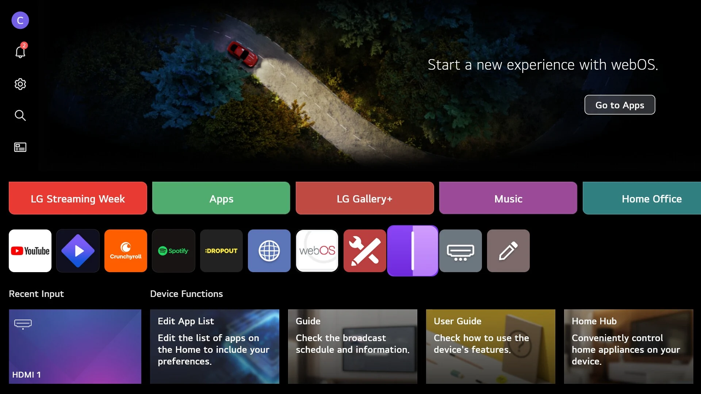
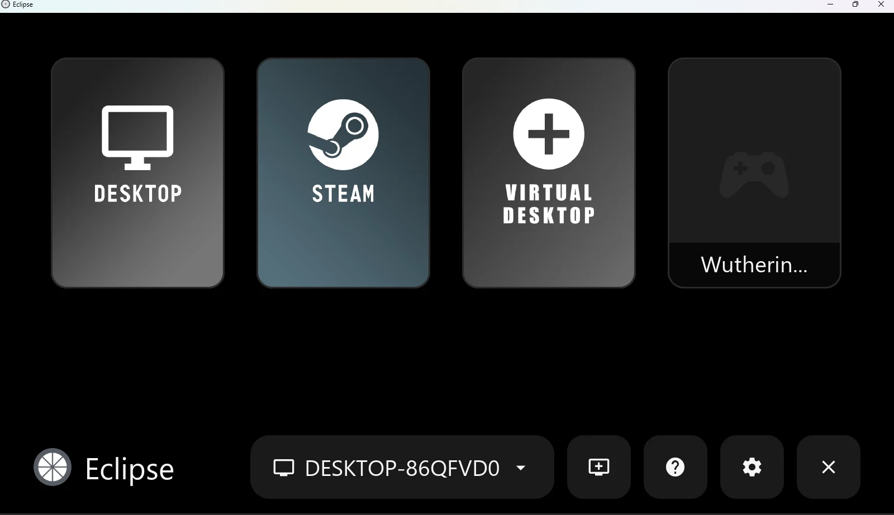
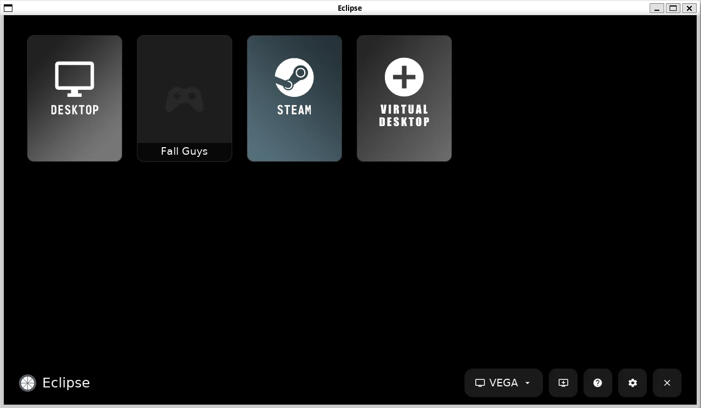
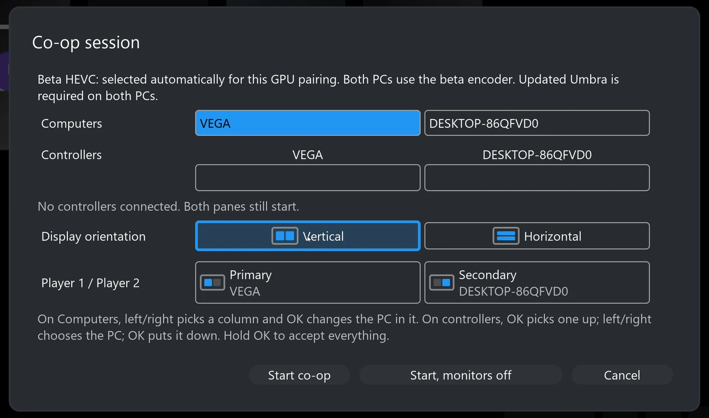

Gaming PC → Umbra
Windows x64 or Ubuntu Linux (22.04 or 24.04) host. Install once for ordinary streaming, twice for two-PC co-op. The game runs here.
Installation Guide
Install Umbra on each gaming PC, then Eclipse on the display device. Start with one working stream before adding the second host.
Windows x64 or Ubuntu Linux (22.04 or 24.04) host. Install once for ordinary streaming, twice for two-PC co-op. The game runs here.
LG webOS, Windows x64 or Linux x86_64 client. Install the package matching the device where you will view and control the stream.
Download an attached file under Assets, not GitHub’s automatically generated Source code (zip) or Source code (tar.gz). Those are developer archives, not installable apps. Use the latest compatible stable release. If no package is attached for your platform, that download is not available.
Pairing · First co-op session · Troubleshooting and logs · Tested hardware

Open the latest release, expand Assets and choose the package described below. If no release is listed, that package has not been published.
Package: the Windows x64 installer Umbra-windows-x64.exe attached to an Umbra release, not an Eclipse client ZIP. You need a Windows gaming PC, a supported GPU and current driver, administrator access for installation, and the games you intend to run already installed. Windows 11 x64 is the tested host OS.
Get-FileHash in PowerShell before opening it.reg.exe in Task Manager (Details tab) and setup continues.For co-op, install the same compatible Umbra release on the second Windows PC. Co-op-specific defaults are separate from ordinary streaming settings. The Co-op Pane is built in and requested automatically by Eclipse, rather than created in the host’s editable Applications list. You should not create application entries, copy host IDs or tune encoder settings by hand.
Open the latest release, expand Assets and choose the package described below. If no release is listed, that package has not been published.
Package: the Ubuntu .deb for your version: Umbra-<version>-ubuntu24.04-amd64.deb for Ubuntu 24.04 or Umbra-<version>-ubuntu22.04-amd64.deb for Ubuntu 22.04. They are two separate builds, not one universal Linux package. You need an x86_64 Ubuntu desktop with a graphical session, a supported GPU and current driver, sudo access for installation, and the games you intend to run already installed. The packages have passed install, upgrade and removal checks; live testing on a Linux host so far covers one earlier Ubuntu 24.04 build.
.deb for your Ubuntu version and its matching checksum. Compare sha256sum of the downloaded file with that checksum.apt from the download folder, so its dependencies are installed too:sudo apt install ./Umbra-<version>-ubuntu24.04-amd64.debsystemctl --user start sunshine (the service keeps its upstream name), and run systemctl --user enable sunshine to start it whenever you sign in. You can also start Umbra from the applications menu.https://localhost:47990 in a browser on that PC, create the local administrator login and review the available game/desktop entries. If a firewall is enabled, allow the host on your trusted private network.Two-PC co-op has been tested with Windows hosts, and the GPU HEVC encoder that lets an NVIDIA PC and an AMD PC share one co-op picture is part of the Windows package. Start with Linux as an ordinary streaming host. To remove Umbra, run sudo apt remove umbra.

Open the latest release, expand Assets and choose the package described below. If no release is listed, that package has not been published.
Package: the standard com.aurora.gamestream_<version>_arm.ipk asset. The inherited package ID is intentional; do not choose a separate beta-app package. You need a supported LG webOS TV, an LG Developer account, a computer and a shared network. Current physical coverage is the LG G5 on webOS 26.
.ipk asset to the computer. In Dev Manager, select the TV, open Apps, choose Install and select that file..ipk the same way; settings and pairings are kept. After an update, close and reopen Eclipse.Keep Developer Mode active and extend its session before it expires. LG removes development-installed apps when Developer Mode is disabled. This installation method does not require rooting your TV.

Open the latest release, expand Assets and choose the package described below. If no release is listed, that package has not been published.
Package: the installer eclipse-windows-x64-setup-unsigned.exe, or the portable eclipse-windows-x64-unsigned.zip, each with its adjacent .sha256 file. Windows 11 x64 is tested; the source minimum is Windows 10 version 1803, which has not received the same physical testing. An up-to-date GPU driver with compatible D3D11VA hardware decoding is required. Windows ARM is not a tested target.
Get-FileHash ./eclipse-windows-x64-setup-unsigned.exe -Algorithm SHA256 and compare the hash with the downloaded checksum.moonlight-tv.exe from it. The inherited executable name is expected. Do not run the app from inside the ZIP or move its executable away from the supplied DLLs, data and notices.
./eclipse, with a paired PC’s apps.Open the latest release, expand Assets and choose the package described below. If no release is listed, that package has not been published.
Package: eclipse-linux-x86_64.tar.gz. Use an x86_64 Linux desktop with glibc 2.35 or newer (Ubuntu 22.04 baseline), a graphical session and working GPU drivers. Bundled application libraries do not replace your graphics driver. Current testing is in WSL Linux environments, not broad native-Linux certification.
sha256sum eclipse-linux-x86_64.tar.gz with that checksum.tar -xzf eclipse-linux-x86_64.tar.gz
cd eclipse-linux-x86_64
./install.shinstall.sh installs Eclipse for your user, without a password, and adds it to the applications menu; the downloaded folder can then be deleted. Installing a newer version the same way keeps your settings and pairings../eclipse from the extracted folder and keep the folder together; ./install-desktop-entry.sh adds that copy to the menu. Then pair the host. To remove an installed copy, run ~/.local/share/eclipse/app/uninstall.sh (add --keep-settings to keep your settings and pairings).Use the portable archive instructions for Ubuntu, Fedora and Arch-style systems meeting these requirements. Do not substitute an ARM package or assume a source archive is a distro installer.
For remote access outside your home, establish a trusted private connection between the devices first. Do not expose the host’s administration interface to the public internet.

The normal install flow uses working co-op defaults. Eclipse requests the built-in Co-op Pane when needed; it does not need to appear in Umbra’s editable Applications list. Disconnect pauses the co-op session so it can be resumed; Quit ends the session on both hosts. If an older build asks for manual setup, check the matching release notes instead of copying hidden settings from a development guide.
Settings → Co-op → Play shared sounds once (Accurate by default) plays a sound both games make, such as narration or music, only once. Some games choose their music at random on each PC, so the two PCs play different tracks the filter cannot merge; if music sounds doubled or messy, turn the game’s music off on one PC.
If Eclipse is running on one of the gaming PCs, controls for that PC can behave differently: its local game reads its controller directly. Keyboard/mouse focus and virtual-display placement remain areas of active testing. A TV or separate client avoids that local-host focus complication.
logs/eclipse-logs.txt. Linux offers the saved bundle and a local-network sharing page. On webOS, open the displayed sharing address on another device and download everything as one file (all.txt), then stop sharing.Post in Eclipse issues, Umbra issues, or reply to the social-media thread where you found the project. Link related reports rather than losing the context across two places.